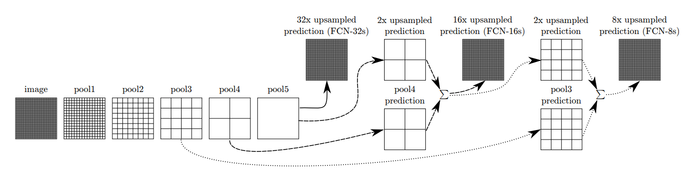
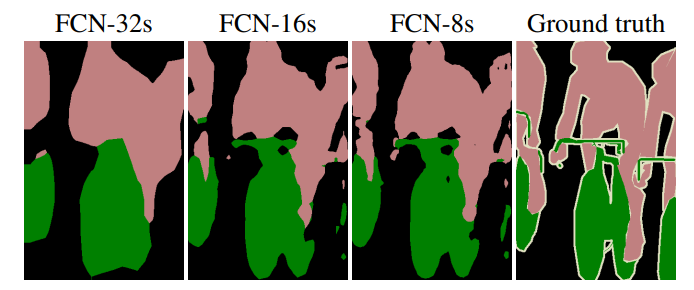

FCN
Table of Contents
1. FCN
https://arxiv.org/pdf/1411.4038.pdf 2015/3
FCN 是最早的基于 dnn 的 semantic segmentation 模型, 它是基于 fully convolutional 的模型, fully convolutional 比较适合 semantic segmentation 任务: conv 之后不需要 fc, 直接按一个 up sample 即可 (deconv, unpooling, interpolate…)
1.1. Network

FCN 主要的设计是不同 stride 的 pooling 通过 skip connection 进行融合, 因为直接 pooling 会导致浅层信息的丢失.
FCN 定义了三种不同规格的模型: FCN-32s, FCN-16s, FCN-8s, 分别代表的是 pooling 融合的`深度`, 例如:
- FCN-32s 直接拿 pool5 进行 32x upsample, 结果会比较差.
- FCN-16s 用 pool5 进行 2x upsample 后与 pool4 融合, 再进行 16x upsample

Backlinks
Dynamic Shaped Network (Dynamic Shaped Network > Fully Convolutional Networks): fully convolutional network 的一个例子就是 semantic segmentation 里的 FCN 模型
SCNN (SCNN > Network > backbone): 关于 pooling 与 semantic segmentation 可以参考 FCN
Semantic Segmentation (Semantic Segmentation > Overview): - (a) 通过 skip-connection, 例如 FCN
Semantic Segmentation (Semantic Segmentation > FCN): FCN